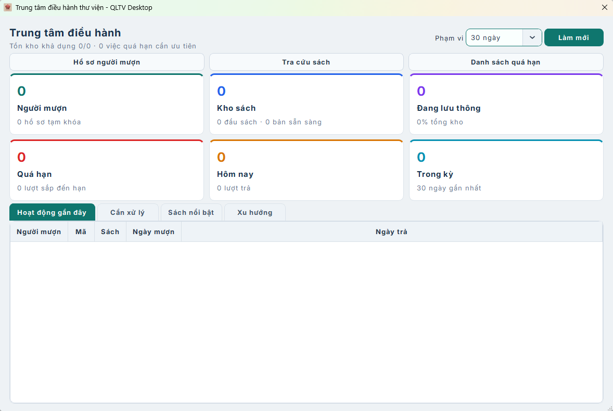
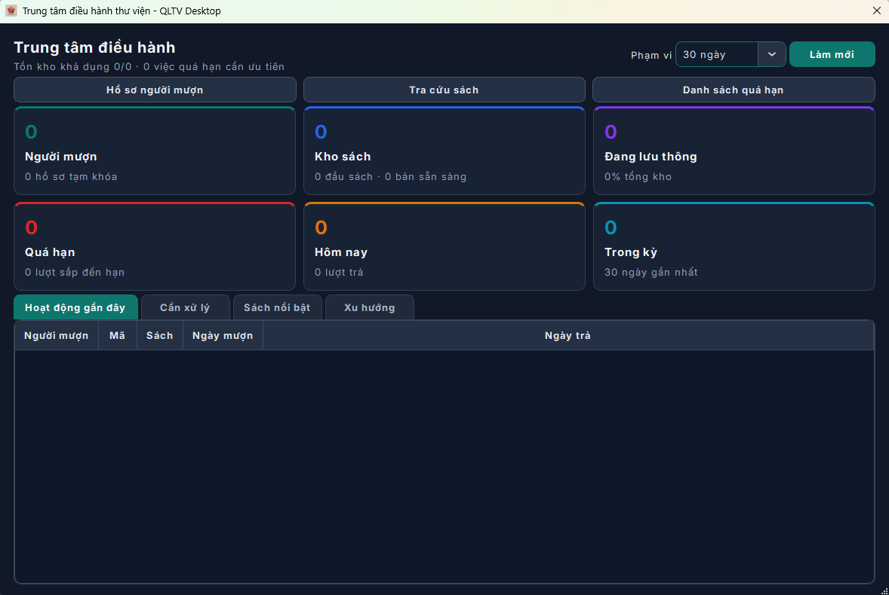

Light DarkQLTV Desktop giúp quản lý sách, độc giả và hoạt động mượn trả trong một không gian trực quan, nhanh chóng.


Light DarkQuản lý toàn bộ hoạt động thư viện trong một giao diện rõ ràng, thống nhất và dễ làm quen.
Lưu trữ, tìm kiếm và phân loại đầu sách. Theo dõi số lượng và tình trạng từng cuốn theo thời gian thực.
Hỗ trợ camera, máy quét, mã QR và Barcode để xử lý giao dịch nhanh, chính xác.
Hồ sơ thành viên tập trung, lịch sử giao dịch rõ ràng và dễ tra cứu khi cần.
Nắm bắt xu hướng hoạt động qua số liệu dễ đọc và xuất báo cáo chỉ trong vài thao tác.
Mỗi phiên bản đều ghi rõ tính năng mới, cải tiến và sửa lỗi để bạn luôn biết ứng dụng đã thay đổi điều gì.
“Phần mềm tốt không làm công việc thêm phức tạp. Nó giúp ta có thêm thời gian cho điều quan trọng.”
QLTV Desktop hướng đến trải nghiệm quản lý thư viện gần gũi, dễ tiếp cận và phù hợp với nhu cầu vận hành thực tế.
Mỗi bản cập nhật tập trung vào độ ổn định, tốc độ và những cải tiến nhỏ có thể tạo nên khác biệt lớn trong công việc hằng ngày.

Tải miễn phí, cài đặt nhanh và bắt đầu quản lý thư viện ngay trên Windows.